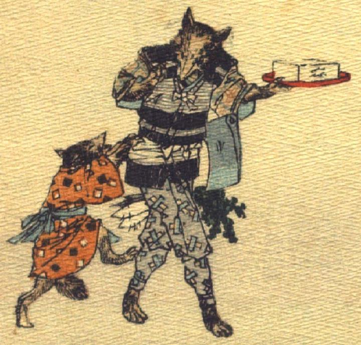

狐。着物と袖なし羽織、袴を着て、斧を腰に差し、きこりのような扮装をしている。左前脚に朱色の盆に載った豆腐を持ち、腰に大根とごぼうのような野菜をぶら下げている。後を追ってはしゃぐ子狐に何か話しかけているようである。
著作者：J.Dautremer／出典：親書誌：U426_nichibunken_0120：La victoire du petit renard／日付：2006／資源識別子：U426_nichibunken_0120_0007_0001
Copyright (c)2010- International Research Center for Japanese Studies, Kyoto, Japan. All rights reserved.